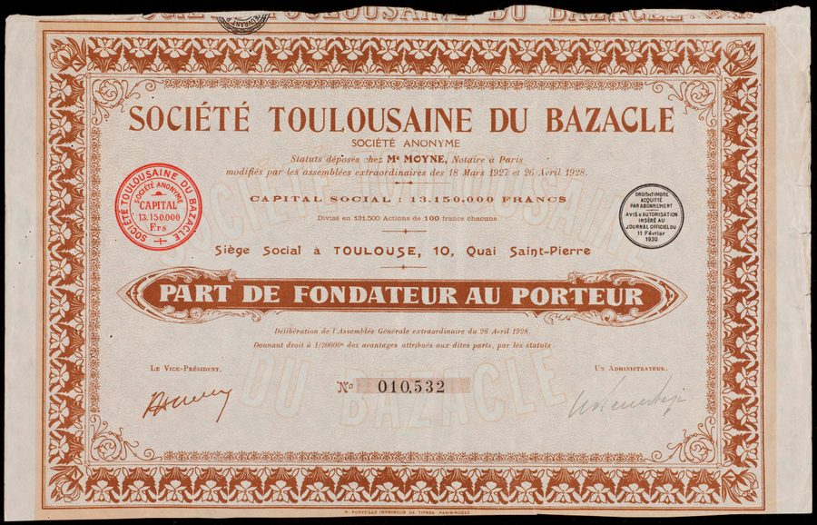
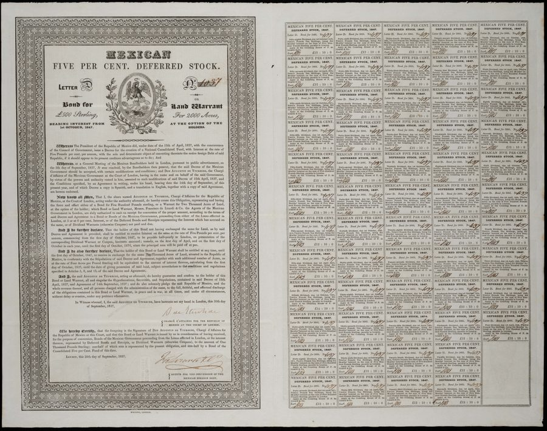
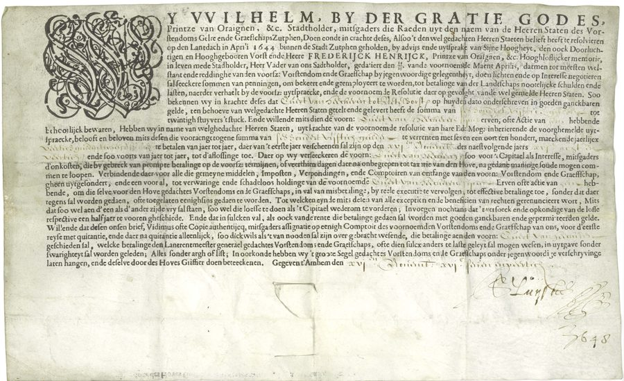
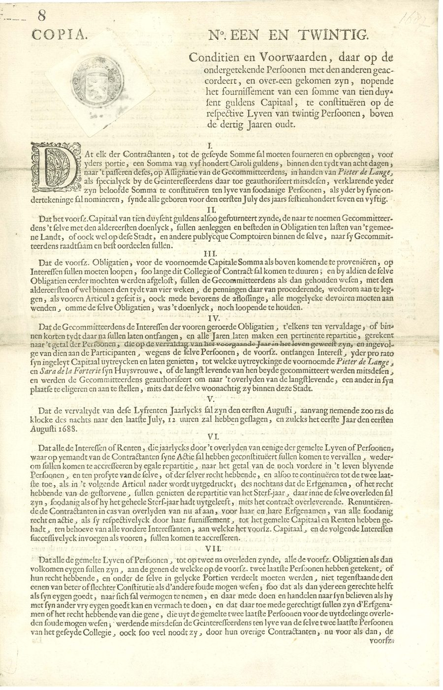
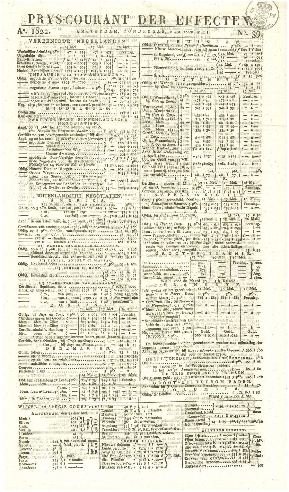

Before Amsterdam: The Medieval Origins of the Joint-Stock Company
The VOC was the world’s first publicly traded company — but not the first joint-stock company. That distinction belongs to a number of earlier experiments, of which the most remarkable is the Société du Bazacle in Toulouse. The Bazacle mill had been operating as a share-based enterprise since at least the 13th century. Its owners held divisible shares called uchaux that were transferable and occasionally priced on a local market — a proto-stock exchange in medieval Languedoc, three centuries before Amsterdam.
This 1927 bearer share in the Société Toulousaine du Bazacle — a twentieth-century utility company — is the direct descendant of that medieval mill cooperative. What distinguished the VOC from its predecessors was not the idea of divisible, transferable shares: that was already ancient. It was the scale of the public offering and, above all, the creation of a continuous, liquid secondary market. When Amsterdam merchants began trading VOC shares on the Bourse in 1602, any citizen could enter or exit the market at a published price. That combination of public access and secondary liquidity was genuinely new.

The VOC Itself: Obligation Receipts from the Middelburg Chamber
These two small printed forms from the Middelburg (Zeeland) Chamber of the VOC are among the most historically significant documents in the collection. Twenty years after the company’s founding, they record the satisfaction of financial obligations — payments received, interest settled, the ordinary paperwork of a company that had by then sent dozens of fleets to Asia and reshaped the global spice trade.
The VOC was chartered by the States General of the Dutch Republic in 1602 with a twenty-one-year monopoly on Dutch trade east of the Cape of Good Hope and west of the Strait of Magellan. Its six regional chambers — in Amsterdam, Middelburg, Delft, Rotterdam, Hoorn, and Enkhuizen — each raised capital and conducted business independently, but under a single corporate umbrella. The Middelburg Chamber, based in the prosperous port city of Zeeland, ran its own fleets and kept its own accounts. That ordinary documents like these survive from 1622 is a reminder of something extraordinary: the VOC created the infrastructure of modern corporate finance, including the record-keeping, the transferable obligations, and the shareholder registers, that later generations would take for granted.

The Market for Shares: Subscriptions, Premiums, and Forward Contracts
Just six years after the VOC’s founding, its model had already inspired imitators. This document from Antwerp, signed April 30, 1608, is a share subscription contract for the Generale Keijserlijke Indische Compagnie — a Habsburg-backed rival East India venture organized from Antwerp. But what makes it remarkable is not the subscription itself: it is the derivative embedded within it. In exchange for a cash premium received upfront, the subscriber commits to deliver and transfer shares at a future date.
This is among the earliest known equity derivatives — a forward contract on company shares, written within a decade of the world’s first public offering. It is evidence that Amsterdam’s financial innovations spread quickly. By the early 1600s, VOC shares were already being traded with options and forward contracts on the Amsterdam Bourse, techniques described in vivid detail by Joseph de la Vega in his 1688 book Confusion de Confusiones — the world’s first treatise on the stock market. The idea that equities could be not just held but traded, hedged, and speculated upon was born in Amsterdam, and this Antwerp document shows it spreading almost immediately.

Sovereign Debt Alongside Equity: The House of Orange Borrows
Amsterdam’s rise as the financial capital of the world was not solely the story of the VOC. Alongside the equity market, the Amsterdam Bourse developed one of Europe’s most sophisticated sovereign debt markets. The Dutch Republic — fighting the Eighty Years’ War against Spain for much of the 17th century — was a prodigious borrower, and Dutch investors proved willing lenders, accepting lower interest rates than any other European sovereign could command.
This printed obligation, issued by Willem, Prince of Orange-Nassau in 1640, references the financial obligations of the House of Orange and its Treasurer General and Rentmeester. It is a document of that parallel market. The same Amsterdam merchant class that held VOC shares also held obligations of the Dutch princes and the States General — moving between equities and government bonds as returns and risks shifted, in a diversification strategy that would be recognizable to any modern portfolio manager. The world’s first stock market and the world’s most sophisticated sovereign debt market grew up together, in the same city, served by the same brokers, financed by the same investors.

The Ecosystem of Innovation: Tontines, Annuities, and the Amsterdam Market
The VOC did not emerge in isolation. Amsterdam in the 17th century was the site of a broader revolution in financial instruments: life annuities, tontines, insurance contracts, forward markets, and options all developed in the same decades, in the same city, among the same community of merchants and investors. This tontine document from 1688 — setting out the conditions for a 500-guilder investment on twenty lives, with payments contingent on survivors — represents the life annuity and mortality-based side of that revolution.
The date is worth noting. In 1688, the same year this tontine was issued, Joseph de la Vega published Confusion de Confusiones in Amsterdam: the world’s first book devoted to explaining the workings of a stock exchange. De la Vega described VOC share trading in extraordinary detail — the bulls and bears, the options traders, the short-sellers, the psychology of the market — suggesting that by 1688 these techniques were well established enough to require a popular guide. The VOC share market and the tontine market were different instruments serving different needs, but they were products of the same financial culture: a city that had learned to put capital to work at scale.

Two Centuries On: The Amsterdam Market in 1822
By 1822, the VOC itself was gone. Bankrupt and heavily indebted after decades of war and mismanagement, it had been nationalized by the Batavian Republic in 1799 and formally dissolved — nearly two centuries after its revolutionary founding. But the market it had created lived on. This weekly securities price list, the Prys-Courant der Effecten No. 39 of 1822, records prices for dozens of instruments traded in Amsterdam: Dutch government bonds, plantation negotiaties, British Consols, French and Austrian and Russian sovereign debt, and American securities.
The list is a document of remarkable continuity. The infrastructure of the Amsterdam capital market — the price lists, the broker networks, the exchange building, the settlement conventions — had outlasted the company that created it by a generation. Investors in 1822 could trade instruments from a dozen nations through Amsterdam, just as their grandparents had traded VOC shares and Dutch government debt. The VOC had failed; the idea of the publicly traded company had not. Within decades, new stock exchanges would open in London, Paris, and New York, carrying Amsterdam’s 1602 innovation into the industrial age.